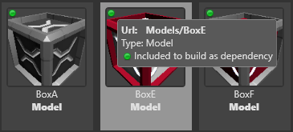
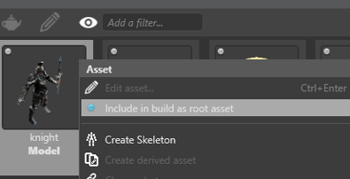
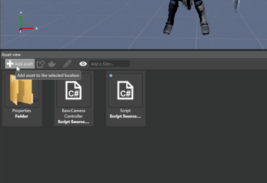
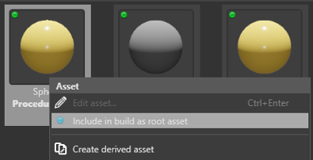

コードからのモデルの作成
初級 プログラマー
実行時にスクリプトでモデルを作成できます。次のように複数の方法で行うことができます。
アセットからモデルを作成します
手続き型モデルを作成します
モデルを含むプレハブをインスタンス化します (「プレハブを使用する」を参照)
アセットからモデルを作成する
新しい空の同期スクリプトを作成します。詳細については、「スクリプトを作成する」を参照してください。

スクリプトで、アセットの URL を使用してモデルをロードします。次に例を示します。
// 新しいエンティティを作成してシーンに追加する。 var entity = new Entity(); SceneSystem.SceneInstance.RootScene.Entities.Add(entity); // ゲーム ファイルに含まれるモデルを追加する。 var modelComponent = entity.GetOrCreate<ModelComponent>(); modelComponent.Model = Content.Load<Model>("MyFolder/MyModel");Tip
モデルのアセット URL を調べるには、［Asset view］でモデルをポイントします。 
スクリプトをスクリプト コンポーネントとしてシーンのエンティティに追加します。使用するエンティティはどれでもかまいません。方法については、「スクリプトを使用する」を参照してください。

［Asset view］で、実行時に作成するモデルを右クリックして、［Include in build as root asset］を選択します。

これで、実行時にスクリプトでアセットを使用できるようになります。詳細については、「アセットを管理する」を参照してください。
手続き型モデルを作成する
新しい空の同期スクリプトを作成します。詳細については、「スクリプトを作成する」を参照してください。

スクリプトをスクリプト コンポーネントとしてシーンのエンティティに追加します。使用するエンティティはどれでもかまいません。方法については、「スクリプトを使用する」を参照してください。
スクリプトで、空のエンティティと空のモデルをインスタンス化します。次に例を示します。
// エンティティを作成してシーンに追加する。 var entity = new Entity(); SceneSystem.SceneInstance.RootScene.Entities.Add(entity); // モデルを作成し、モデル コンポーネントに割り当てる。 var model = new Model(); entity.GetOrCreate<ModelComponent>().Model = model;スクリプトで、組み込みの幾何学的プリミティブ (球や立方体など) を使用して手続き型モデルを作成します。次に例を示します。
// 幾何学的プリミティブ (球や立方体など) を使用してメッシュを 1 つ以上追加する。 var meshDraw = GeometricPrimitive.Sphere.New(GraphicsDevice).ToMeshDraw(); var mesh = new Mesh { Draw = meshDraw }; model.Meshes.Add(mesh);または、独自の頂点バッファーとインデックス バッファーを使用してメッシュを作成します。次に例を示します。
// または、独自の頂点バッファーとインデックス バッファーを使用してメッシュを作成する。 mesh = new Mesh { Draw = new MeshDraw { /* 頂点バッファーとインデックス バッファーのセットアップ */ } }; model.Meshes.Add(mesh);Note
頂点バッファーとインデックス バッファーをセットアップする方法については、「頂点の描画」を参照してください。
最後に、モデルに 1 つ以上のマテリアルを指定する必要があります。これを行うには 2 つの方法があります。
オプション 1: コードでマテリアルをロードする
コードで 1 つ以上のマテリアルをロードして、モデルに追加します。モデルは複数のマテリアルを使用できるので (モデル内のメッシュごとに 1 つ)、Mesh.MaterialIndex を使用して、リストのどのマテリアルをどのメッシュに使用するかを指定します。
次に例を示します。
// 1 つ以上のマテリアルを追加する。モデルで複数のマテリアルが使用されている場合は (メッシュごとに 1 つ)、Mesh.MaterialIndex でリストのマテリアルとメッシュの対応を指定する。 Material material = Content.Load<Material>("MyFolder/MyMaterial"); model.Materials.Add(material);［Asset view］で、スクリプトで使用するすべてのマテリアル アセットを右クリックし、［
Include in build as root asset］を選択する。
これで、実行時にスクリプトでアセットを使用できるようになります。詳細については、「アセットを管理する」を参照してください。
オプション 2: コードで新しいマテリアルを作成する
次に例を示します。
// マテリアルを作成する (赤い拡散色など)。
var materialDescription = new MaterialDescriptor
{
Attributes =
{
DiffuseModel = new MaterialDiffuseLambertModelFeature(),
Diffuse = new MaterialDiffuseMapFeature(new ComputeColor { Key = MaterialKeys.DiffuseValue })
}
};
var material = Material.New(GraphicsDevice, materialDescription);
material.Parameters.Set(MaterialKeys.DiffuseValue, Color.Red);
model.Materials.Add(material);